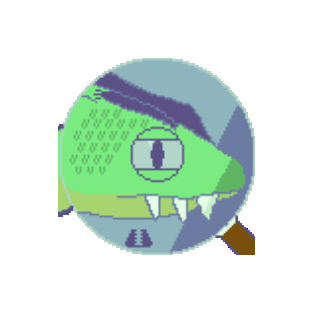
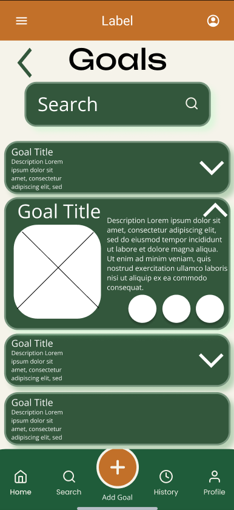
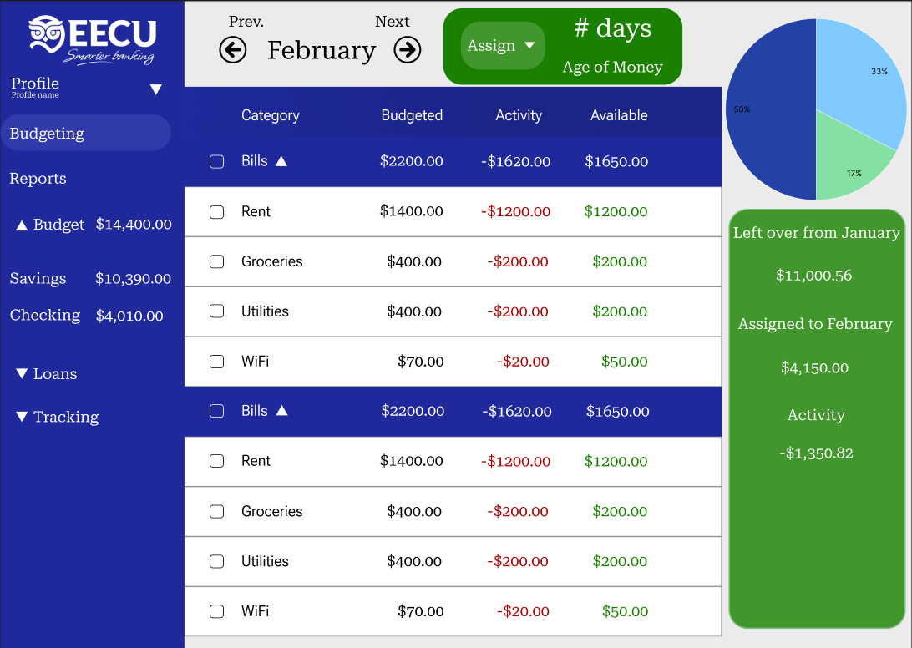
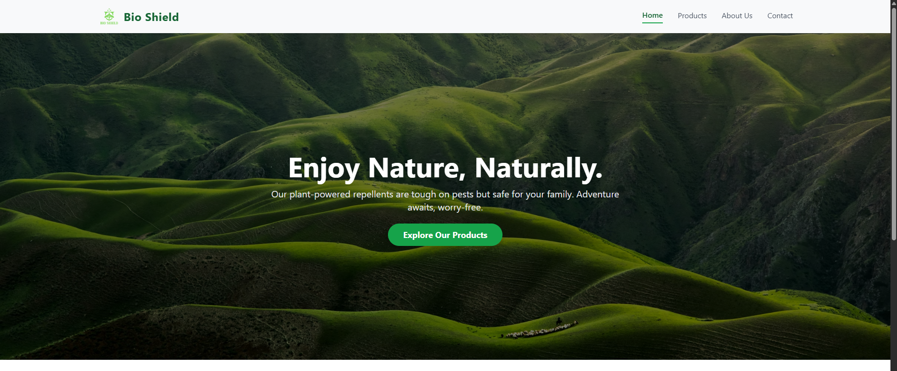

My class in C.A.R.T. was tasked with rehauling an animal tracking app that the Fresno Chaffee Zoo is using. The project could be used for other Zoos in the future. We used Figma, a software that is used to design apps, to prototype the new app.

I was tasked with creating an app for the official EECU and their consumers. It was a budget calculator that had special features such as giving tips on budgeting and how much they are spending over budget.

One of the projects I have worked on in C.A.R.T. consist of the “Bioshield” website, a page for a fake company that sells bug spray and bug killers. I started this project on September 11th, 2025 and ended it on September 23rd, 2025. Another project I created for C.A.R.T. was the “PAWpal” project, a rough draft of a website that tracks info about your pet. I started this project on October 6th, 2025 and finished it on November 3rd, 2025.

I wrote a research paper on how diurnal animals in zoos are different from nocturnal animals. It goes into detail about how nocturnal animals need special care and enrichment.
I wrote an argumentative essay about who has control, the provider or the seeker of attention. As an example, I used the relationship between the users and the creators of social media. It talks about how neither are in true control of the other.